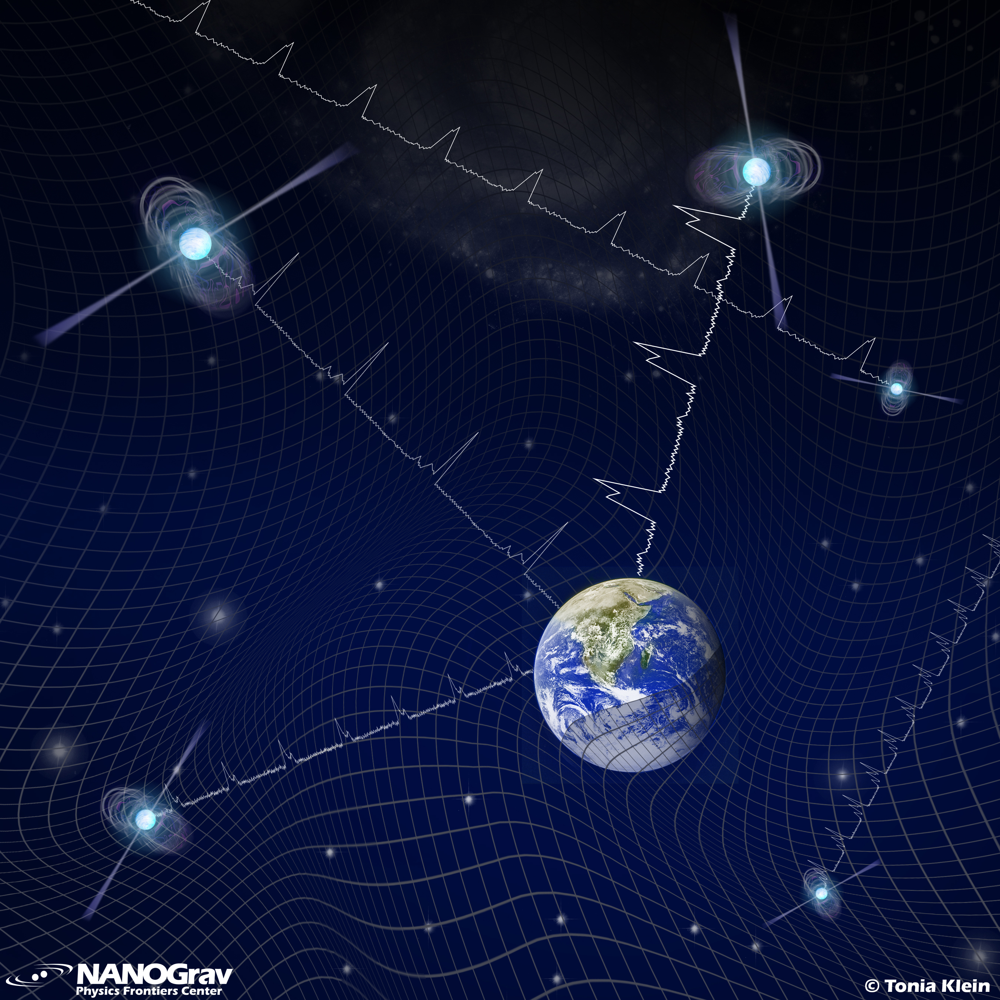

Goals
Build a solid command of the fundamentals of gravitational-wave astrophysics — with an emphasis on the nanohertz band — and learn the methods used to hunt for nanohertz GWs with pulsar timing arrays.
The 2026 VIPER Summer School on Pulsar Timing Array GW Astrophysics — your gateway into the theory, sources, statistics, and data analysis behind the nanohertz gravitational-wave sky.
Build a solid command of the fundamentals of gravitational-wave astrophysics — with an emphasis on the nanohertz band — and learn the methods used to hunt for nanohertz GWs with pulsar timing arrays.
Two weeks, July 20 – 31, 2026. Mornings are lectures; afternoons mix hands-on software tutorials, hack time, and a software helpdesk. Held in person in the Chapel auditorium of the 17th & Horton Building (the “Sony Building”), running 9:00 am–4:00 pm each weekday.
Vanderbilt sits minutes from downtown Nashville and the airport. Midtown and Downtown — both walkable — host a huge range of food, music, and nightlife.
The VIPER summer-school series is supported in part by NSF CAREER award #2146016, “Unveiling the Nanohertz GW Discovery Landscape by Broadening Participation in Multi-Messenger Astrophysics.”
Week 1 lays the foundations — GW theory, pulsars and timing, stochastic backgrounds, supermassive black-hole binaries, and the statistics that underpin every search. Week 2 turns to frontier topics: new-physics signals, noise, electromagnetic counterparts, advanced sampling, population inference, anisotropy, and continuous waves.
Throughout, afternoons are for getting your hands dirty — installing the stack, timing a pulsar, running Bayesian and frequentist GWB searches, and hacking on your own questions with instructors on hand.

A set of self-contained, browser-based demos — watch a binary radiate, stretch a ring of test masses, time a pulsar against a passing GW, and collapse pulsar pairs onto the Hellings & Downs curve. No install required.